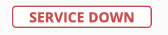

Kea DHCP High Availability
Warning
Synchronized clocks are essential for the high availability setup to operate reliably. If a clock skew is not corrected and exceeds 60 seconds, the high availability service on each of the servers is terminated.
Important
Kea DHCP servers need to be configured for high availability before the primary server is added to Micetro. Micetro will recognize the high availability relationship and configure accordingly.
High Availability hooks library
Previously only available to paid subscribers, the HA hooks library is now part of the open-source Kea. The library needs to be loaded before the Kea DHCP servers can be managed in High Availability mode.
Tip
For RedHat-like systems (such as RHEL, CentOS, SUSE, Fedora, etc.), the hook library is usually located at /usr/lib/x86_64-linux-gnu/kea/hooks/libdhcp_ha.so. For Debian-based systems (such as Ubuntu, Linux Mint, Raspbian, etc.), the hook library is usually located at /usr/lib64/kea/hooks/libdhcp_ha.so.
Two modes of failover operation are supported:
- Load-balancing
One of the servers must be designated as primary and another as secondary. During normal operation they’re identical. When the two servers are started at (nearly) the same time, and synchronize their lease databases, the primary server will always synchronize its database first. The secondary will wait for the primary to complete before it starts its own synchronization.
- Hot standby
In this configuration, one of the servers is designated as primary and another as secondary. During normal operation only the primary server will respond to DHCP requests, and the secondary (or standby) receives lease updates from the primary over the control channel. When the secondary server considers the primary to be offline, it will start responding to DHCP queries.
Ports and networking
Micetro can only support a Kea High availability setup if it can communicate with each Kea DHCP server through the correct ports. (This is also necessary for cross-communication between the Kea DHCP servers themselves through the Kea Control Agent.)
The Kea Control Agent uses port 8000 by default, but that value can be manually defined in its configuration file. (Usually located at /etc/kea/kea-ctrl-agent.conf.) This port needs to be open and accessible on every server that hosts a Kea DHCP service and a Kea Control Agent.
Configuring the High Availability setup
Kea DHCP servers in a High Availability environment must be already synced and configured to communicate with each other before adding them to Micetro. After setting up the HA environment, the configuration file is parsed and all HA relationships are detected when the primary server is added to Micetro. As a result, these relationships are successfully imported to Micetro, and replication between servers begins.
Note
If the Configuration Backend section is set and configured, Micetro will assume that the config is shared between all members and will not replicate the changes between servers.
An example of a hook-libraries section of the configuration where Micetro will successfully detect the setup and act accordingly:
"hooks-libraries": [{
"library": "/usr/lib/kea/hooks/libdhcp_ha.so",
"parameters": {
"high-availability": [{
"this-server-name": "server1",
"mode": "load-balancing",
"heartbeat-delay": 1000,
"max-response-delay": 10000,
"max-ack-delay": 5000,
"max-unacked-clients": 0,
"peers": [{
"name": "server1",
"url": "http://192.168.56.33:8000/",
"role": "primary",
"auto-failover": true
}, {
"name": "server2",
"url": "http://192.168.56.66:8000/",
"role": "secondary",
"auto-failover": true
}, {
"name": "server3",
"url": "http://192.168.56.99:8000/",
"role": "backup",
"auto-failover": false
}]
}]
}
- this-server-name (Server Tag)
This field must reflect the Kea DHCP server where the configuration file resides.
Note
It is only possible to add a primary Kea DHCP server in a preconfigured HA relationship. When the server is added to Micetro,
this-server-namemust match the peer with"role": "primary"in the high-availability section.This setting is also available via Server Properties in Micetro under the name Server tag. See Editing Kea DHCP Server Properties.
- max-response-delay
This value should be greater than the
heartbeat-delay, and is usually greater than the duration of multipleheartbeat-delayvalues.When the server detects that communication is interrupted, it may transition to the
partner-downstate (whenmax-unacked-clientsis 0) or trigger the failure-detection procedure using the values of the two parameters below. Settingmax-unacked-clientsto 0 ensures that the Kea servers are vigilant and correctly and immediately change states if the connection between them is lost. To allow some leniency, change themax-unacked-clientsvalue to a positive number, for example 5.The default value of
max-response-delayis 60000 ms.Warning
If
max-response-delayis not configured correctly, the servers will not be able to consistently and efficiently detect downtime between each other, and Micetro won’t be able to ensure the correct replication and operations of the servers.
Tweaking the DHCP Server Controller
The preferences.cfg file for the DHCP Server Controller can be used to tweak the Kea high availability setup.
- keaReplicateConfig
If this value is set to 0, Micetro will not replicate between Kea DHCP servers in a high availability setup. The default value is 1. Example:
<keaReplicateConfig value=”0”/>- keaControlAgentHost
Determines which host to use when connecting to a control agent. The default value is
127.0.0.1if the Kea Control Agent is running on the same machine, or the IP address of the server added to Micetro.- keaControlAgentPort
Determines which port to use when connecting to the Kea Control Agent. The default value is
8000.
Adding a high availability-enabled Kea DHPC server to Micetro
If the Kea high availability environment is set up correctly, system administrators can add the primary Kea DHCP server just like any other DHCP server.
Important
If the DHCP Server Controller is running on a machine other than the primary Kea DHCP server, a proxy must be defined in the Add DHCP server dialog in Micetro. In the dialog, enter the IP address or FQDN of the of the machine running the DHCP Server Controller.
Fallback behavior and indicators
After the primary Kea server has been added to Micetro, it will acts as the primary mode of communication between Micetro and the high availability cluster. All changes will be written to this primary server and replication will be handled with regards to it. The single-source-of-truth for the configuration will be the in-memory config on the primary Kea DHCP server.
When both the primary Kea server and all its secondary/backup partners in the high availability environment are running and accessible, Micetro will report the Kea DHCP server as OK.
Primary server offline
If the primary server is offline (or unavailable for any reason, such as reporting itself in a disabled state, or becomes unreachable from Micetro) the secondary/standby server will take its place in Micetro. The user interface will report the Kea DHCP service Impaired. During this time, the single-source-of-truth will be the in-memory config on the secondary/standby server, and will remain this way until connection to the primary server is re-established.
Secondary/standby/backup server offline
If any of the secondary/standby/backup servers are offline, replication to all other servers will still take place but Micetro will report the Kea DHCP service Impaired. When the affected secondary/standby/backup reports itself as active again, it will be automatically synchronized with the single-source-of-truth configuration. (The in-memory config of the primary Kea server.)
Both primary and secondary/standby server offline 
If both primary and secondary/standby servers go offline, Micetro will report the Kea DHCP service Service down. All further operations will result in an error reporting this downtime. All replication is stopped until either the primary or the secondary/standby servers report themselves as active. The first one to become active will be the single-source-of-truth, but the primary will always overwrite any secondary/backup when it becomes active.
DHCP Server Controller offline
In the unlikely event that the DHCP Server Controller is offline, all Kea high availability information will be momentary lost. As soon as the Server Controller comes back online, Central will attempt to reconnect to the preconfigured primary Kea DHCP server. After reconnecting to the primary Kea server, the configuration will be parsed again, the high availability setup detected, and replication between servers begins again.
Note
If the DHCP Server Controller goes down while using the secondary/backup Kea server (because the primary was down) the system will not be able to reconnect successfully. Because only the primary Kea server can be added to Micetro, a system administrator must reestablish the primary Kea server to a working state before the system will be able to reconnect.
Note
If the DHCP Server Controller goes offline and is brought back up again while the primary Kea server is down, it will not be able to reconnect until the primary Kea server becomes active again.
Making external changes to Kea servers in high availability
Note
All changes made to the configuration file through Micetro will automatically and instantly be propagated to the secondary/backup servers in a Kea DHCP High Availability setup. Therefore it is highly recommended to always edit the Kea DHCP server’s configuration file through Micetro to ensure the immediate synchronization between Micetro and the Kea DHCP server.
- Primary server
As with the stand-alone server, Micetro synchronizes any external changes on the primary Kea server on a defined schedule. (See Handling external changes with Kea.) Propagation of the changes to the secondary/backup servers only happens automatically after the servers go out of an active state and then become active again. To manually propagate the changes, the user has to make a change (any change) to the configuration through a feature in Micetro. This will trigger a synchronization.
- Secondary server(s)
The same rules apply regarding the changes to the configuration and the
config-reloadcommand. However, Micetro will overwrite any external changes with the current in-memory configuration of the primary Kea DHCP server in the high availability setup.